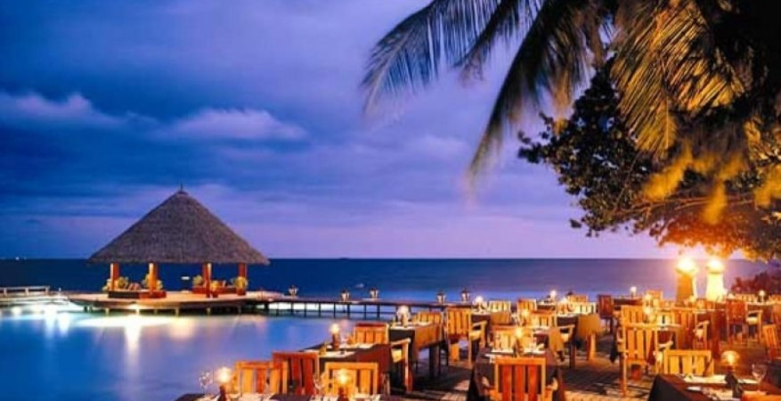

Турция
Турция является одной из лучших туристических стран мира. Большинство туристов, приезжающих на отдых в Турцию проводить свой отпуск на море, но по этой стране можно бесконечно путешествовать, при этом она будет удивлять вас снова и снова. Например Стамбул находится в первой десятке туристических городов мира, а в центральной части Турции раскинулась удивительно красивая и необычная область, называемая Каппадокией. На сайте рассказывается именно о достопримечательностях этих и многих других мест в Турции. Этот сайт посвящается всем любителям путешествий, всем кто желает узнать больше нового о Каппадокии и Турции.

Египет
Египет – древнее государство с богатым культурным наследием и традициями. Здесь на высоком уровне развита туристическая инфраструктура. Страна у многих людей ассоциируется не только с, богатым коралловыми рифами, Красным морем, широкими песчаными пляжами, солнцем и высококлассными отелями, но и знаменитыми достопримечательностями — пирамидами и святой горой Моисея. Их стоит, хотя бы раз в жизни, увидеть собственными глазами. О том, какому египетскому курорту отдать предпочтение и что посмотреть в Арабской республике, расскажет "От".

Мальдивы
Мальдивские острова сегодня по праву считаются лучшим экзотическим направлением для туристов. Эта удивительная страна состоит из 1190 небольших островов (а точнее, атоллов), которые как нельзя лучше подходят для достойного пляжного отдыха. Следует сказать, что отдых на Мальдивах по карману не каждому. Местные туристы делятся на три категории: молодые влюбленные пары, которым никто, кроме друг друга, не нужен, обеспеченные дайверы, являющиеся самыми непритязательными туристами, и ценители расслабленного отдыха в окружении восхитительной местной природы тропического рая.
Пляжи на Мальдивских островах заслуженно считаются самыми живописными на Земле. Изумительно чистая вода, белый песок, укромные бухты и обширные участки побережья - все это способствует созданию образа райского уголка. Отдых здесь подразумевает общение с чарующей своей красотой природой. На одном острове, как правило, располагается один отель. При этом как острова, так и отели удивительно разнообразны. Сразу из аэропорта столицы Мальдив – Мале туристы отправляются на свой остров на гидросамолете или скоростном катере.
Столица Мальдив – Мале. Основные курорты: атолл Ари, атолл Вааву, атолл Лавиани, атолл Мииму, атоллы Северный и Южный Мале, атоллы Раа и Баа, атоллы Шавиани и Нуну, атолл Фаафу, атолл Лааму, атолл Хаа-Алифу.